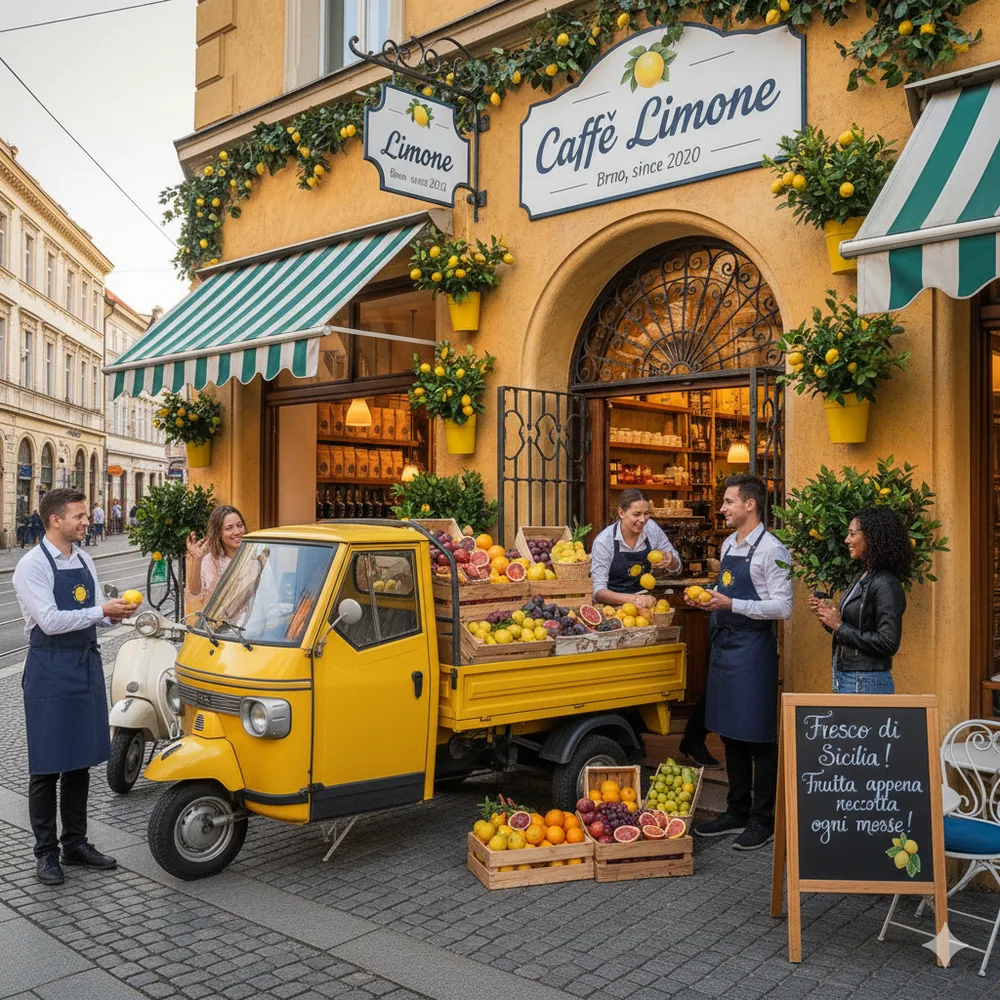
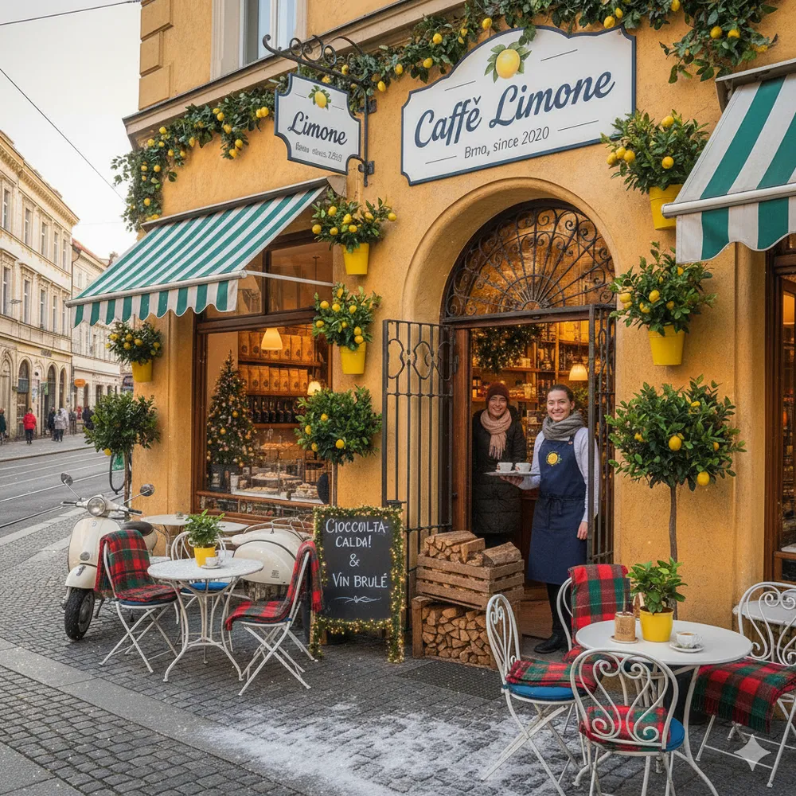
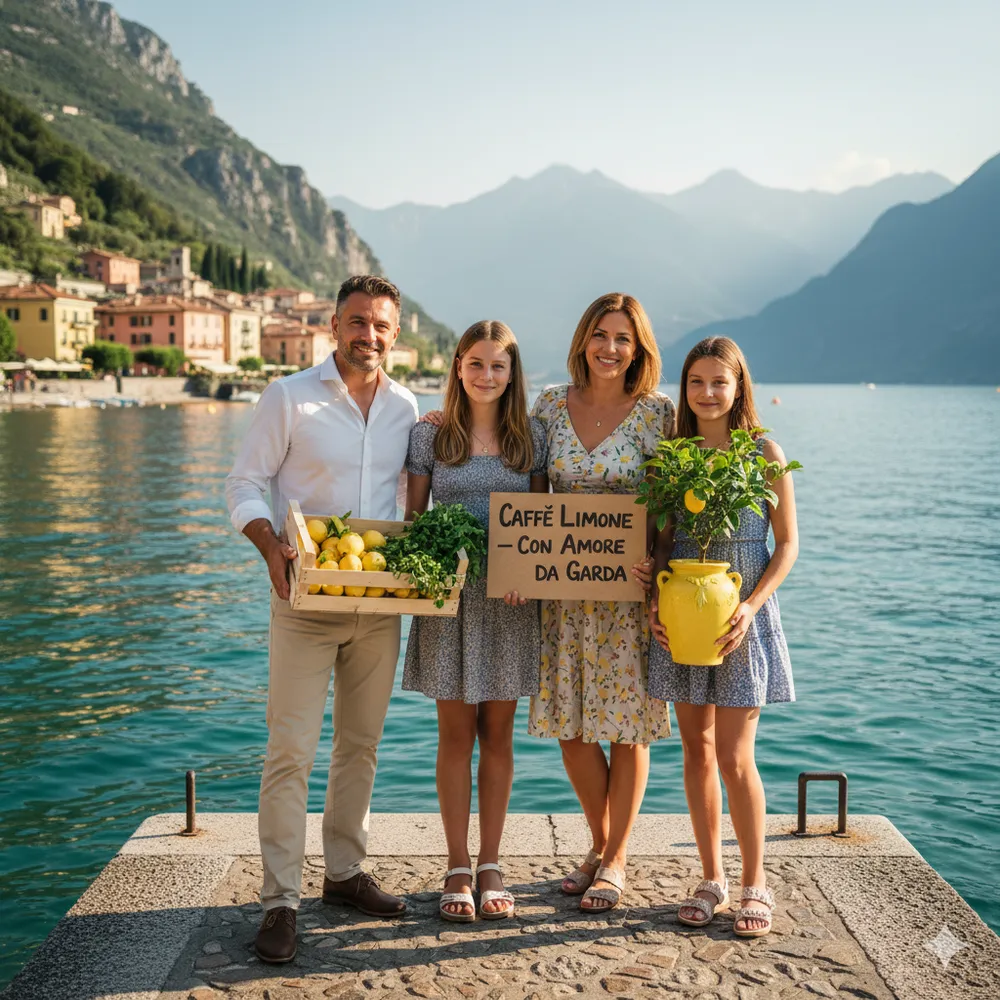

O nás – Příběh Caffè Limone
V srdci Brna, na rušné ulici, kde se mísí historie s moderním životem, se zrodilo Caffè Limone. Není to jen tak ledajaká kavárna; je to místo, kde se setkává vášeň pro italskou kávu, láska k čerstvým chutím a touha přenést kousek slunce a pohody z Gardského jezera přímo k vám.
Sen o Gardském jezeře v Brně
Náš příběh začal v roce 2020, kdy se zakladatelé Caffè Limone, inspirováni nespočetnými cestami po severní Itálii a okouzleni malebným městečkem Limone sul Garda, rozhodli přenést tuto atmosféru do Brna. Představovali si místo, kde si lidé mohou vychutnat dokonalé espresso, dopřát si lahodné mandlové pečivo a na chvíli uniknout shonu všedního dne. Místo, kde se každá návštěva stane malou dovolenou.
Naše filosofie: kvalita a autenticita
V Caffè Limone věříme, že nejlepší zážitky se rodí z těch nejlepších ingrediencí. Pečlivě vybíráme zrnka kávy od malých italských pražíren, které ctí tradiční metody a zaručují nezaměnitelnou chuť. Naše zákusky pečeme podle rodinných receptů, s láskou a z čerstvých surovin. Každý šálek kávy, každý zákusek a každý úsměv je pro nás vyjádřením naší vášně.
Cesta za Limoncello a citrony: Každý měsíc z Gardského jezera
To, co dělá Caffè Limone skutečně jedinečným, je naše spojení s Gardským jezerem. Chápeme, že pravá chuť
Itálie pochází přímo od zdroje. Proto se jednou měsíčně vydáváme na vzrušující cestu do Limone sul
Garda, které je proslulé svými citronovými sady a jedinečným mikroklimatem. Náš tým osobně vybírá ty
nejšťavnatější citrony, které jsou základem pro naše domácí limonády a limoncello.
Představte si to: Jednoho slunného rána, obvykle první víkend v měsíci, se před naší kavárnou objeví
ikonické italské tříkolové vozítko Ape Piaggio. Není to jen vozidlo, je to symbol naší oddanosti
čerstvosti. Naložené bednami zářivého ovoce, bylinek a dalších regionálních pokladů, přináší naši
"Fresca di Garda!" – čerstvost přímo z Gardského jezera. Srdečně vás zveme, abyste se k nám připojili a
ochutnali to nejlepší, co tato oblast nabízí, a to přímo z vozítka! Je to skvělá příležitost probrat si
s námi nejnovější úlovky a načerpat kousek severoitalské atmosféry.
Rodina Caffè Limone
Jsme malý tým s velkým srdcem a obrovskou láskou k tomu, co děláme. Každý člen naší rodiny Caffè Limone je tu, aby vám zajistil ten nejlepší zážitek. Těšíme se na vaši návštěvu a na to, že se s vámi podělíme o kousek naší italské vášně!
